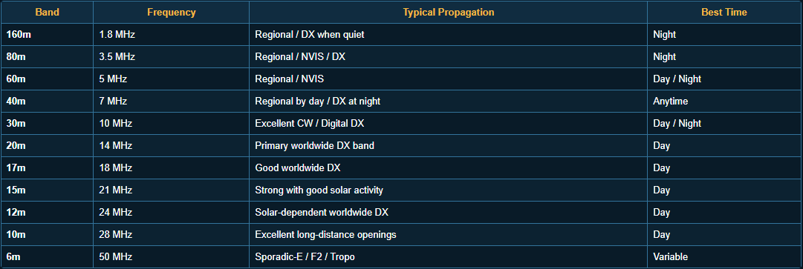

CURRENT SOLAR & PROPAGATION CONDITIONS
|
HF PROPAGATION
|
|
|
CURRENT WORLD MUF / PROPAGATION
|
SOLAR-TERRESTRIAL DATA
|
PROPAGATION TOOLS
|
VOACAP
HF Propagation Prediction |
DXMAPS
Band Opening Maps |
NOAA SWPC
Space Weather |
SOLARHAM
Solar & Geomagnetic Data |
SATELLITE OPERATIONS
|
AMSAT STATUS
Satellite Status |
SATNOGS
Ground Station Network |
PASS PREDICTIONS
Satellite Tracking |
ARISS / ISS
ISS Amateur Radio |
MORSE CODE / CW RESOURCES
|
LCWO
Learn & Practice CW |
MORSECODE.WORLD
Learn & Practice CW |
·−
MORSE CODE
Code Reference |
RF QUICK REFERENCE
|
HALF-WAVE DIPOLE
Feet: 468 ÷ MHz Meters: 142.65 divide; MHz |
¼-WAVE VERTICAL
Feet: 234 divide; MHz Meters: 71.3 divide; MHz |
WAVELENGTH
Meters: 299.8 divide; MHz Approx: 300 divide; MHz |
POWER
30 dBm = 1 W 40 dBm = 10 W 50 dBm = 100 W 60 dBm = 1 kW |
|
COAX LOSS
Cable Calculator |
GRID SQUARE
Maidenhead Locator |
SWR
SWR / Return Loss |
INDUCTANCE
Coil Calculator |
HF BAND QUICK REFERENCE
|
 |
|
ARRL BAND PLAN
US Amateur Bands |
FREQUENCIES
Amateur Allocations |
BAND CHARTS
Graphical Reference |
OPERATING
ARRL Resources |
ARIZONA & LOCAL RESOURCES
|
AZ REPEATERS
RepeaterBook |
AZ FREQUENCY COORD.
Arizona Coordination |
NWS PHOENIX
Local Weather |
SKYWARN
Severe Weather |
LIVE RADIO TOOLS & MAPS
ABOUT KR3LAX
|
MY STATION
Operating:
HF VHF UHF CW SSB Digital Satellites Emergency Communications Radios: ICOM-7300 Yaesu FTM-400XDR/DE Amplifier: Ameritron AL-811H Antennas: Dipoles Verticals Portable Antennas Satellite Yagis |
CURRENT PROJECTS
⚙ ESP32 Satellite Rotator
📡 Portable Multiband Verticals ·− Learning Morse Code 〰 CW Keyer / Paddle Projects 🔀 Antenna Switching Systems 🖨 3D Printed Radio Accessories 🛰 Satellite Antennas 🔋 Portable Radio Power Systems 🔧 Whatever is currently on the bench... |
WHY AMATEUR RADIO?
For me, amateur radio is a mix of communication,
experimentation, problem solving, building, learning, and public
service.
One day it is HF DX. The next it is CW, satellites, antennas, emergency communications, or trying to figure out why something that modeled perfectly has a 3:1 SWR. Same waves. A brighter world. |